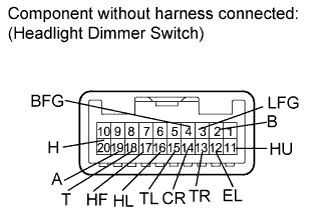
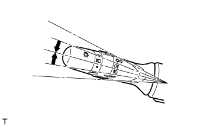
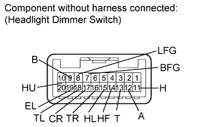
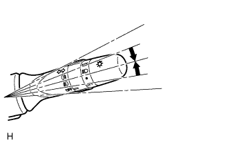

HEADLIGHT DIMMER SWITCH > INSPECTION |
| 1. INSPECT HEADLIGHT DIMMER SWITCH ASSEMBLY (for LH Side) |
 |
Measure the resistance according to the value(s) in the table below.
| Tester Connection | Switch Condition | Specified Condition |
| 20 (H) - 12 (EL) | Light control switch off | 10 kΩ or higher |
| 18 (T) - 12 (EL) | ||
| 18 (T) - 12 (EL) | Light control switch tail | Below 1 Ω |
| 18 (T) - 12 (EL) | Light control switch head | Below 1 Ω |
| 20 (H) - 12 (EL) |
Measure the resistance according to the value(s) in the table below.
| Tester Connection | Switch Condition | Specified Condition |
| 17 (HF) - 12 (EL) | Headlight dimmer switch flash | Below 1 Ω |
| 16 (HL) - 12 (EL) | Headlight dimmer switch low beam | Below 1 Ω |
| 11 (HU) - 12 (EL) | Headlight dimmer switch hi beam | Below 1 Ω |
 |
Measure the resistance according to the value(s) in the table below.
| Tester Connection | Switch Condition | Specified Condition |
| 14 (CR) - 12 (EL) | Turn signal switch right turn | Below 1 Ω |
| 13 (TR) - 12 (EL) | ||
| 13 (TR) - 12 (EL) | Turn signal switch right lane change | Below 1 Ω |
| 14 (CR) - 12 (EL) | Turn signal switch neutral | 10 kΩ or higher |
| 13 (TR) - 12 (EL) | ||
| 15 (TL) - 12 (EL) | ||
| 15 (TL) - 12 (EL) | Turn signal switch left lane change | Below 1 Ω |
| 14 (CR) - 12 (EL) | Turn signal switch left turn | Below 1 Ω |
| 15 (TL) - 12 (EL) |
Measure the resistance according to the value(s) in the table below.
| Tester Connection | Switch Condition | Specified Condition |
| 4 (BFG) - 3 (LFG) | Front fog light switch off | 10 kΩ or higher |
| 4 (BFG) - 3 (LFG) | Front fog light switch on | Below 1 Ω |
| 2. INSPECT HEADLIGHT DIMMER SWITCH ASSEMBLY (for RH Side) |
 |
Measure the resistance according to the value(s) in the table below.
| Tester Connection | Switch Condition | Specified Condition |
| 11 (H) - 19 (EL) | Light control switch off | 10 kΩ or higher |
| 13 (T) - 19 (EL) | ||
| 13 (T) - 19 (EL) | Light control switch tail | Below 1 Ω |
| 13 (T) - 19 (EL) | Light control switch head | Below 1 Ω |
| 11 (H) - 19 (EL) |
Measure the resistance according to the value(s) in the table below.
| Tester Connection | Switch Condition | Specified Condition |
| 14 (HF) - 19 (EL) | Headlight dimmer switch flash | Below 1 Ω |
| 15 (HL) - 19 (EL) | Headlight dimmer switch low beam | Below 1 Ω |
| 20 (HU) - 19 (EL) | Headlight dimmer switch hi beam | Below 1 Ω |
 |
Measure the resistance according to the value(s) in the table below.
| Tester Connection | Switch Condition | Specified Condition |
| 17 (CR) - 19 (EL) | Turn signal switch right turn | Below 1 Ω |
| 16 (TR) - 19 (EL) | ||
| 16 (TR) - 19 (EL) | Turn signal switch right lane change | Below 1 Ω |
| 17 (CR) - 19 (EL) | Turn signal switch neutral | 10 kΩ or higher |
| 16 (TR) - 19 (EL) | ||
| 18 (TL) - 19 (EL) | ||
| 18 (TL) - 19 (EL) | Turn signal switch left lane change | Below 1 Ω |
| 17 (CR) - 19 (EL) | Turn signal switch left turn | Below 1 Ω |
| 18 (TL) - 19 (EL) |
Measure the resistance according to the value(s) in the table below.
| Tester Connection | Switch Condition | Specified Condition |
| 7 (BFG) - 8 (LFG) | Front fog light switch off | 10 kΩ or higher |
| 7 (BFG) - 8 (LFG) | Front fog light switch on | Below 1 Ω |